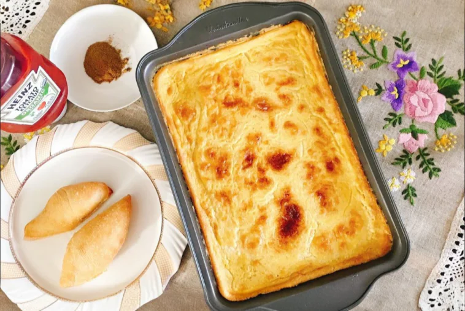

Karantika is a beloved, deeply nostalgic Algerian street food classic with roots in Oran. This affordable, golden-crusted chickpea cake features a unique dual texture: a beautifully browned, slightly firm top layer hiding a rich, creamy, almost custard-like center. Best served piping hot straight out of the oven, it is traditionally slapped inside a fresh baguette piece, dusted with earthy cumin, and smeared with fiery harissa. It is fast, filling, and pure comfort food.
Preheat your oven to 220°C (425°F). A very hot oven is crucial to setting the bottom while keeping the middle creamy. Lightly oil a deep baking dish (approx. 20x30 cm).
In a large mixing bowl, vigorously whisk together the egg, vegetable oil, salt, and half of the cumin. If you are using milk for extra creaminess, mix it in here.
Gradually add the chickpea flour alternating with the water. Whisk constantly to prevent lumps. Web Tip: For the absolute smooth texture expected in top recipes, use a hand blender for 60 seconds until the mixture is thin, completely smooth, and slightly frothy.
Let the batter sit on the counter for 15 to 30 minutes if you have time. This allows the chickpea flour to fully hydrate, preventing a powdery texture after baking. Give it one quick final stir before pouring it into your oiled pan.
Carefully pour the very liquid batter into the pan. Bake on the lower-middle rack for about 20 to 25 minutes. The edges will begin to firm up and turn golden, but the center should still be quite jiggly.
Switch your oven to the broiler (grill) setting. Move the tray up closer to the top heat. Broil for 5 to 10 minutes until a dark, spotted, deep golden-brown crust forms across the entire surface.